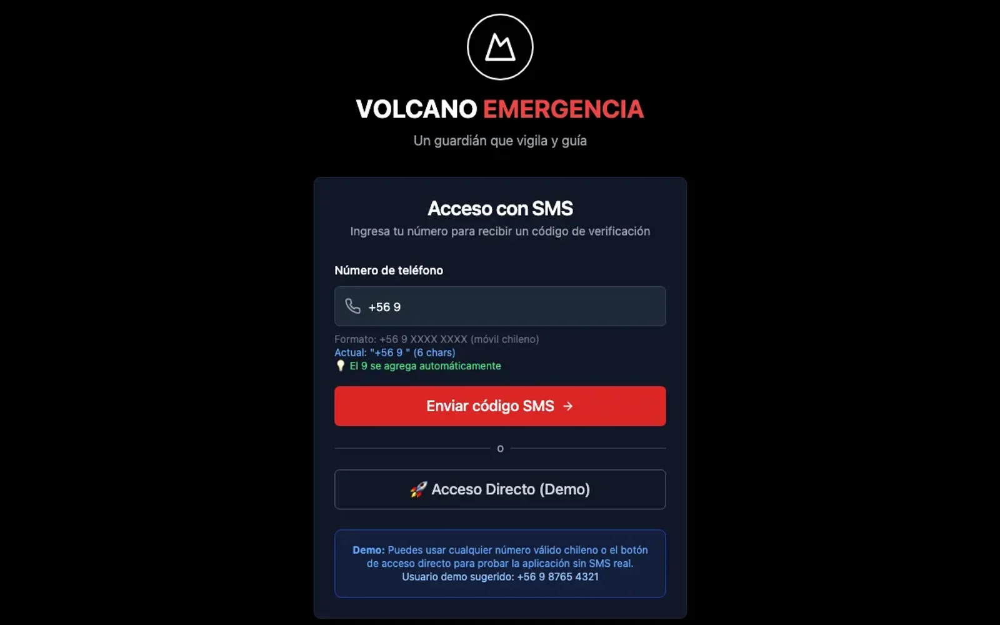

Vulcania: community volcano monitoring with Next.js, Supabase and audio synthesis

Chile has more than 90 active volcanoes. It is the second largest volcanic chain in the world, after Indonesia. Sernageomin runs the official monitoring, but when there is an emergency, the information that reaches communities is a mess: WhatsApp groups, Facebook posts, phone calls. There is no single source of truth.
People living in risk zones — farmers, rural communities, municipal emergency teams — have no way to report what they see on the ground. That first-hand information gets lost or circulates without verification.
Vulcania tries to fill that gap. It is a community volcano monitoring platform that brings together citizen observations and verified data, focused on the Villarrica Volcano.
Two modes, one app
The app works in two modes. The Demo mode uses local simulated data and needs nothing but the frontend running. The Full mode connects to Supabase for auth, database and real-time. The transition is automatic: lib/app-config.ts checks whether the Supabase environment variables exist and, if not, activates demo.
This was not a luxury. It was the decision that let anyone clone the repo and see the full app without setting up a database, without creating a Supabase project, without touching environment variables. pnpm dev and done.
In demo mode, the data comes from lib/demo-data.ts: a predefined user with phone +56 9 8765 4321, an orange alert for Villarrica, three preloaded meeting points (Estadio Pucón, Escuela Quelhue, Club de Huasos), evacuation zones. Enough to show the complete experience.
Stack
| Layer | Technology |
|---|---|
| Frontend | Next.js 15 (App Router) + React 19 + TypeScript |
| Styles | Tailwind CSS v4 + shadcn/ui |
| Backend | Supabase (PostgreSQL + Auth + RLS + Realtime) |
| Maps | Leaflet + OpenStreetMap (free, no API key) |
| Audio | Web Audio API (oscillator synthesis) |
| Notifications | Browser Notification API |
| Infra | Vercel |
| Testing | Vitest + jsdom |
The emergency modal
The emergency-modal.tsx component is the most interesting part of the app. When the alert level rises to orange or red, a full-screen modal blocks everything and plays a sound pattern with the Web Audio API.
We don't use audio files. We use triangle-wave oscillators generated in real time: 880 Hz with short pulses for orange alert, 440 Hz with longer pulses and shorter intervals for red alert. The sound loops until the user interacts. There is a forceEmergency() button in development to test the modal without waiting for a real alert.
Browsers block audio autoplay — it needs prior user interaction. The solution was a click/touchstart handler that initializes the AudioContext and keeps it alive with setupAudioUnlock(). Without that trick, the emergency modal would be silent exactly when it matters most.
Browser notifications use document.visibilityState: they only fire when the tab is not visible. If the user is actively looking at the map, there is no point pushing a notification.
Challenges
Multi-user real-time synchronization
The chat and the alerts had to show up instantly for every user. Supabase Realtime solved the broadcast channel, but we had to handle race conditions on concurrent messages with server-timestamp ordering.
Mobile-first design for field use
Users mainly access it from smartphones in areas with patchy signal. The PWA had to work offline with cached data and sync when reconnected. The dual demo/full architecture was the key: anyone clones the repo, runs pnpm dev and sees the full experience in 30 seconds.
Reliable push notifications
Volcanic activity alerts are critical. We implemented exponential retries, topic subscriptions by urgency level, and browser notifications that only fire when the tab is not visible — using document.visibilityState.
Architecture
Next.js 14 App Router → Supabase (PostgreSQL + PostGIS + Realtime) → Leaflet interactive map → PWA Service Worker.
Authentication with Supabase Auth (OAuth + email). Row Level Security for community data.
Vercel for hosting with Edge Functions.
Results
- Working PWA platform with an online demo in production, installable and offline-first
- Real-time interactive map with seismological data and volcanic data layers
- Community chat with instant sync via Supabase Realtime
- Alert system with push notifications configurable by urgency level
- Audio synthesis with the Web Audio API for the emergency modal — oscillators generated in real time, no audio files
Lessons learned
- Supabase Realtime drastically simplifies WebSockets. What used to require a dedicated service is now declarative subscriptions. Broadcast, presence and postgres changes in a single product.
- PWAs are underrated. Installability, offline-first and native notifications without going through app stores. For emergency tools, the user not having to install anything is a decisive advantage.
- Row Level Security is treacherous. The initial setup let one user see another user's reports. Properly defined
USINGandWITH CHECKpolicies peruser_iddelegated authorization to the data layer with no complex middleware. But you have to test them like code. - Leaflet over Mapbox/Google Maps. Lighter, open source, and enough for medium-complexity geospatial data. The dynamic import with
next/dynamicandssr: falsetakes some initial dancing, but it's worth it. - Normalizing Chilean phone numbers is a necessary hell. +569XXXXXXXX, +56XXXXXXXX, 9XXXXXXXX, 0XXXXXXXX — all valid. The
normalizarTelefono()function handles every combination so login works no matter how the user types their number.
Open source
The repo includes the full app with a working demo mode and no configuration, tests with Vitest + jsdom, diagnostic scripts (pnpm doctor, pnpm validate-env) and deploy to Vercel.